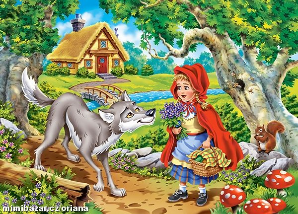

ČERVENÁ KARKULKA
Úvodní strana
Příběh
Postavy
Co měla v košíku
Místa kterými šla
KUDY ŠLA ZA BABIČKOU
Když šla karkulka za babičkou, šla přes tyto místa:
Karkulčina vesnice
palouček
les
mýtina
babičina chaloupka
